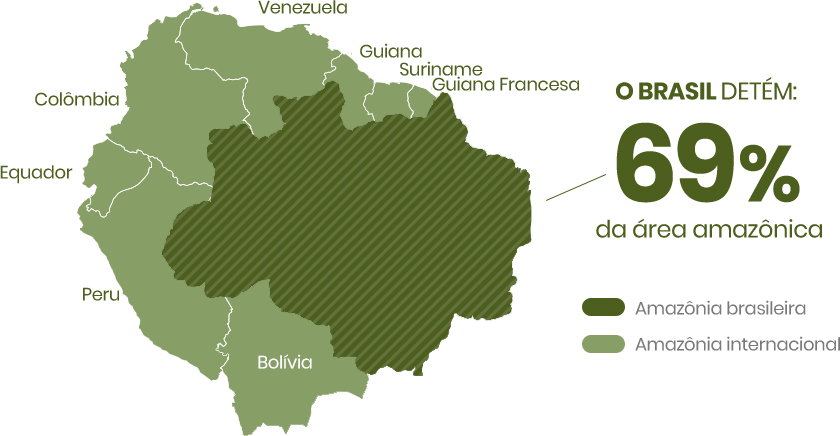
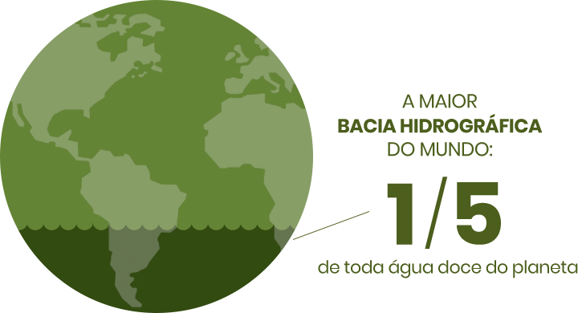
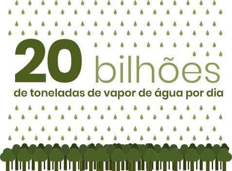
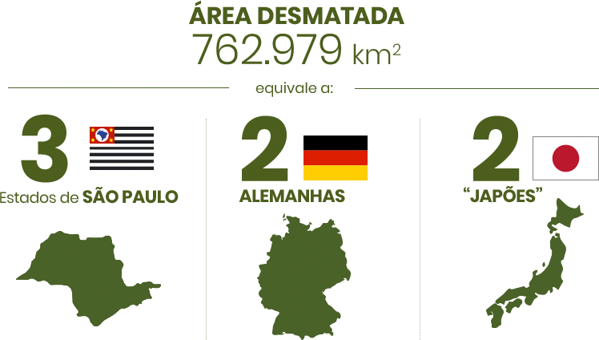
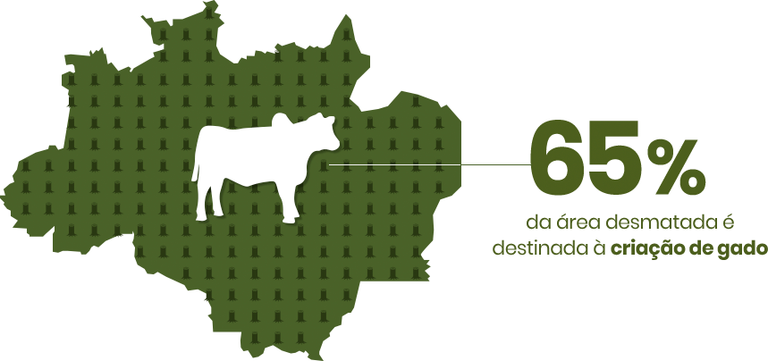

Esse site foi feito para apresentar algumas curiosidades sobre a amazônia, e também um site de autoria minha. A Floresta Amazônica, muitas vezes chamada de "pulmão do planeta", é uma das maravilhas naturais mais extraordinárias do mundo. Estendendo-se por nove países da América do Sul, ela abriga uma rica biodiversidade e desempenha um papel vital em diversos aspectos ambientais globais.
Tamanho e biodiversidade
5,5 milhões de quilômetros quadrados, distribuídos em nove países: Brasil, Peru, Colômbia, Venezuela, Equador, Bolívia, Guiana, Guiana Francesa e Suriname.
A maior parte da floresta está no Brasil.A maior parte da floresta está no Brasil.

A floresta abriga quase 25% de todas as espécies de seres vivos da Terra, sendo:
40 mil espécies de plantas;
mais de 400 tipos de mamíferos;
1.300 tipos de pássaros; e
mais de 3 mil espécies de peixes.
Tamanho e biodiversidade
É a maior bacia hidrográfica do mundo, com mais de 25 mil km de rios navegáveis.

Apenas o Rio Amazonas despeja 17 bilhões de toneladas de água por dia no mar. Isso corresponde a 20% de todo o volume de água doce que chega aos oceanos em todo o mundo.
Importância para o clima
A cada dia, a floresta coloca na atmosfera uma quantidade de vapor de água que influencia diretamente o clima e garante as chuvas para o quadrilátero delimitado por Cuiabá, ao norte, São Paulo, a leste, Buenos Aires, ao sul, e a Cordilheira dos Andes, a oeste. Essa área concentra 70% do PIB da América do Sul.

Uma única árvore grande, com copa com 20 metros de diâmetro, coloca mais de mil litros de vapor de água por dia na atmosfera.
A floresta estoca entre 80 e 120 bilhões de toneladas de carbono.
Desmatamento
O desmatamento por corte raso (remoção total da floresta) acumulado na Amazônia até 2013 chegou a 762.979 km². É uma área equivalente a 184 milhões de campos de futebol.

São 23 mil novos focos de desmatamento todos os anos.
Fora os mais de 762.000 km² de desmatamento por corte raso, estima-se que, até 2013, a área de floresta degradada pela exploração madeireira e pelo desmatamento gradual alcançou 1.255.100 km².
Somando corte raso com degradação, o impacto ambiental acumulado na Amazônia atinge cerca de 2.018.079 km², o que corresponde a 43,34% da cobertura original da floresta.
Boa parte da área desmatada na Amazônia é destinada à pecuária, para criação de gado.
